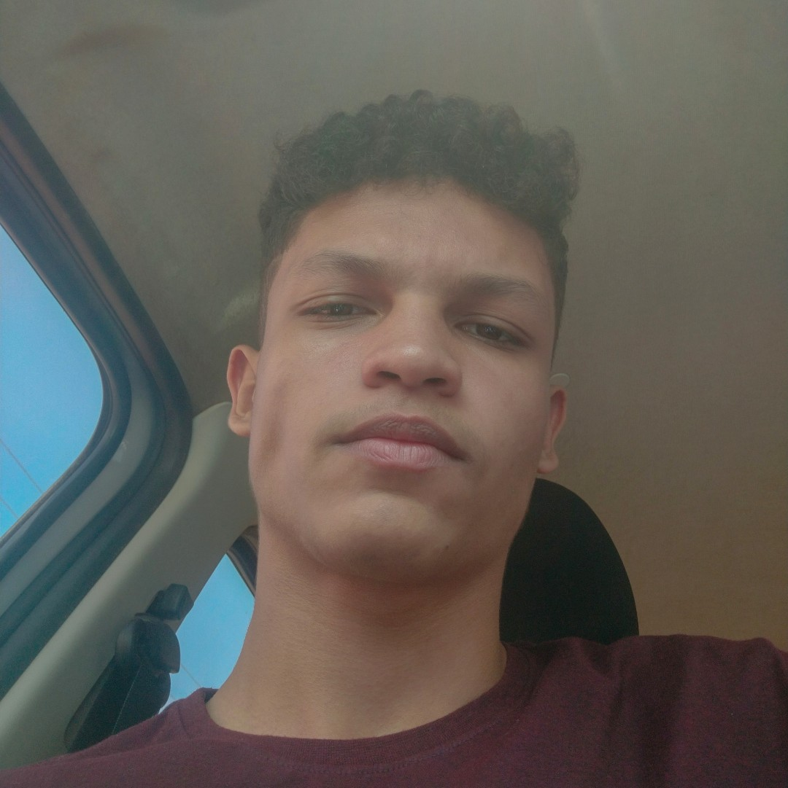
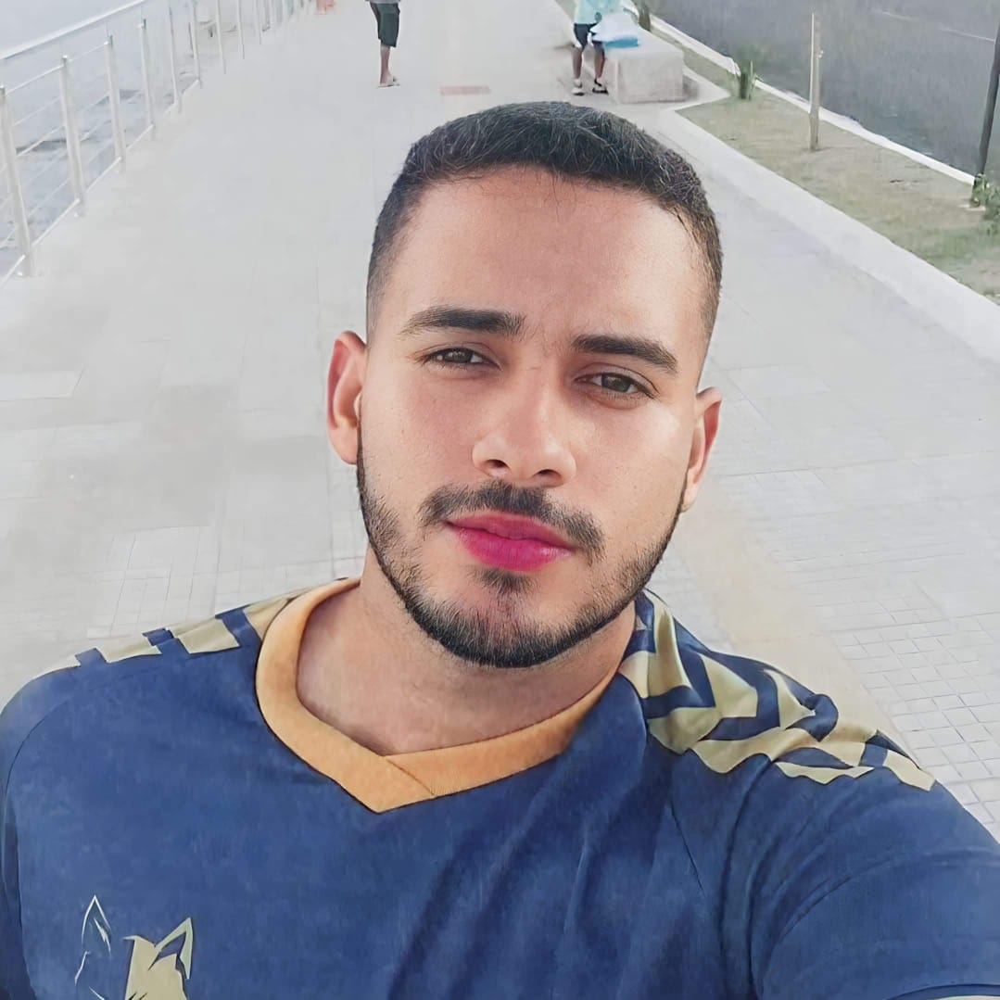
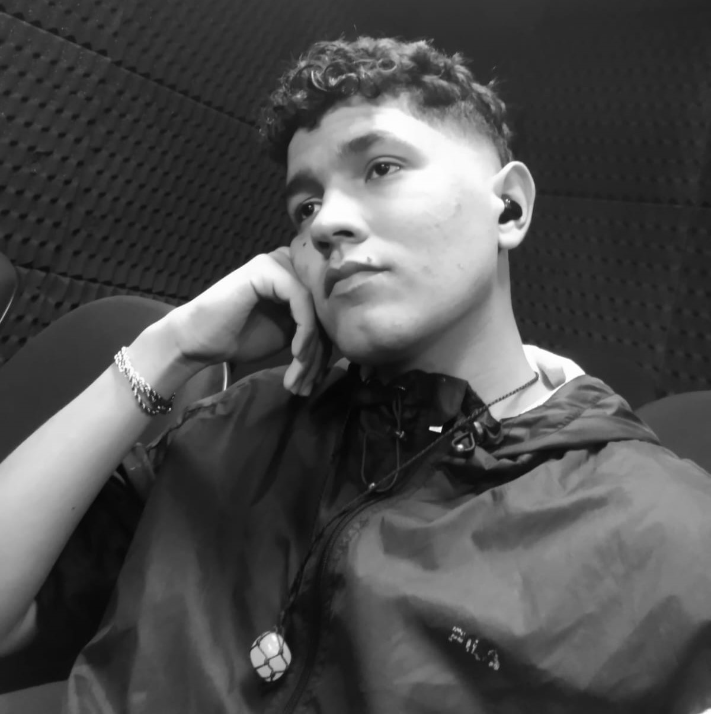
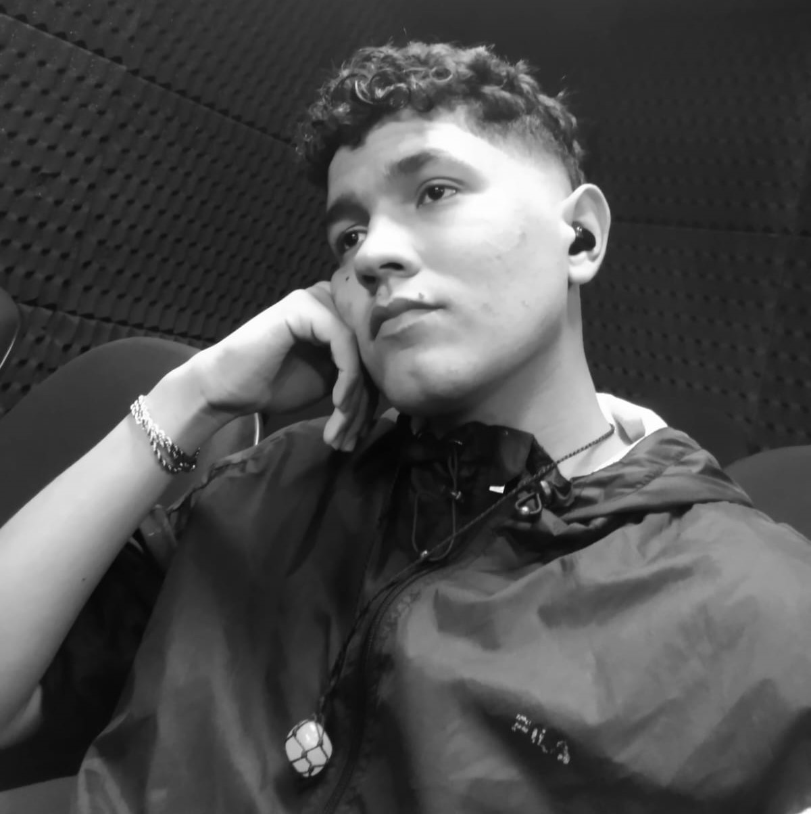

SSOBRE OS PARTICIPANTES DO GRUPO


 

Olá gente, somos alunos da turma de manutenção e suporte em informática, do IFPA campus Tucuruí,
obrigado por ter lido nossa trabalho até aqui. Foram dias escrevendo e aperfeiçoando para chegar até aqui,
ainda existe muito a melhorar e aprender sobre a criação de site e conteudos como esse, mas esperamos que esse
tenha ajudado você que visitou.
Agora vamos nos apresentar e falar um pouco sobre cada partcipante.
Herick Oliveira
- Me chamo Herick Oliveira, tenho 19 anos e sempre fui bem apegado a tecnologia, no 8° ano do fundamental
descobri sobre o curso do IFPA e sem pensar duas vezes decidi que queria participar. Hoje o conhecimento que
adquiri na instituição tornou-se minha base e me motivou a buscar metas para futuramente dar passos ainda
maiores no ramo da tecnologia.
Ryan Carlos
- Me chamo Ryan Carlos, tenho 20 anos e sempre gostei da tecnologia, no 9° ano do fundamental descobri sobre
o curso do IFPA e sem pensar duas vezes decidi fazer a prova, e consegui engressar. Hoje o conhecimento que
adquiri na instituição tornou-se minha base e me motivou a buscar metas para futuramente dar passos ainda
maiores na aréa técnologica.
Rian Souza
- Me chamo Rian D. Souza, tenho 22 anos de idade e tenho uma certa paixão por tecnologia. No meu último ano do
fundamental um professor me indicou e incentivou a entrar no IFPA fiz o processo seletivo e passei, hoje já
trabalho na área e graças ao curso de Manutenção E S. Em Informática que fiz, a base de conhecimento que
adquiri possibilita aprofundar meu conhecimento ainda mais na área da tecnologia sem medo.
Hermeson Willian
- Meu nome e Hermeson William, tenho 20 anos e deste de criança me vi voltado para computadores e tecnologias
acima de qualquer outro interesse. Ao término do ensino fundamental, escolhi cursar o IFPA por seu prestígio
e qualidade de ensino, e quando tive que escolher um curso não tive dúvida de escolher a Manutenção e Suporte.
Hoje tenho muitas das ferramentas necessárias para me especializar ainda mais nos campos da tecnologia.
Samara Severo
- Meu nome é Samara, tenho 19 anos e sempre achei interesante o quanto é rapido o crescimento da tecnologia
hoje em dia, e quando descobri o IFPA, seus cursos oferecidos e a qualidade de ensino quando estava
terminando o fundamental não pensei duas vezes, hoje eu descobri uma área de grande interesse meu, passei
em outros cursos pela federal e vou continuar estudando e aprofundando os conhecimento neste assunto em
constante evolução